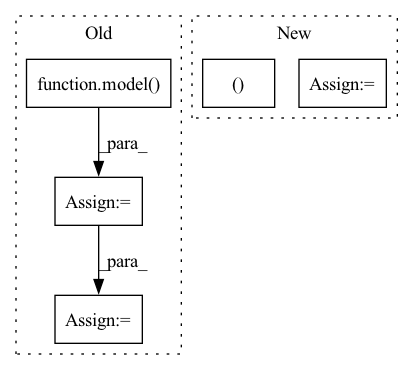

Pattern ID :36731

Before Change
inputs = model.preprocess(batch_data, device)
// scores: B x N x num_classes
scores = model(inputs)
labels = batch_data[1]
scores, labels = self.filter_valid(scores, labels, device)
logp = torch.distributions.utils.probs_to_logits(
scores, is_binary=False)
loss = criterion(logp, labels)
acc = accuracy(scores, labels)
iou = intersection_over_union(scores, labels)
After Change
with torch.no_grad():
for idx, inputs in enumerate(tqdm(valid_loader,
desc="validation")):
results = model(inputs["data"])
loss, gt_labels, predict_scores = model.loss(
Loss, results, inputs, device)
acc = Metric.acc(predict_scores, gt_labels)
iou = Metric.iou(predict_scores, gt_labels)
In pattern: SUPERPATTERN
Frequency: 3
Non-data size: 5
Instances
Fragment ID: 104821340
Project Name: intel-isl/open3d-ml
Commit Name: 89937ebfc8ba0757f2626e88d4243cc88fd61a84
Time: 2020-08-20
Author: yilingq@umd.edu
File Name: ml3d/torch/pipelines/semantic_segmentation.py
M Class Name: SemanticSegmentation
N Class Name: SemanticSegmentation
M Method Name: run_train(2)
N Method Name: run_train(2)
M Parent Class:
N Parent Class:
M File Name: ml3d/torch/pipelines/semantic_segmentation.py
N File Name: ml3d/torch/pipelines/semantic_segmentation.py
M Start Line: 159
M End Line: 268
N Start Line: 157
N End Line: 258
'>
Before Change
inputs = model.preprocess(batch_data, device)
// scores: B x N x num_classes
scores = model(inputs)
labels = batch_data[1]
scores, labels = self.filter_valid(scores, labels, device)
logp = torch.distributions.utils.probs_to_logits(
scores, is_binary=False)
loss = criterion(logp, labels)
acc = accuracy(scores, labels)
iou = intersection_over_union(scores, labels)
After Change
self.valid_ious = []
step = 0
with torch.no_grad():
for idx, inputs in enumerate(tqdm(valid_loader,
desc="validation")):
results = model(inputs["data"])
loss, gt_labels, predict_scores = model.loss(
Loss, results, inputs, device)
acc = Metric.acc(predict_scores, gt_labels)
iou = Metric.iou(predict_scores, gt_labels)
'>
Fragment ID: 104821339
Project Name: isl-org/open3d-ml
Commit Name: 89937ebfc8ba0757f2626e88d4243cc88fd61a84
Time: 2020-08-20
Author: yilingq@umd.edu
File Name: ml3d/torch/pipelines/semantic_segmentation.py
M Class Name: SemanticSegmentation
N Class Name: SemanticSegmentation
M Method Name: run_train(2)
N Method Name: run_train(2)
M Parent Class:
N Parent Class:
M File Name: ml3d/torch/pipelines/semantic_segmentation.py
N File Name: ml3d/torch/pipelines/semantic_segmentation.py
M Start Line: 159
M End Line: 268
N Start Line: 157
N End Line: 258
'>
Before Change
loss_fct = paddle.nn.loss.CrossEntropyLoss()
logits = model(input_ids)
loss = loss_fct(logits, input_ids)
self.parent.assertEqual(loss.shape, [1])
self.parent.assertEqual(logits.shape, [self.batch_size, self.seq_length, self.vocab_size])
loss.backward()
After Change
base_model = GPTModel(**config)
model = GPTLMHeadModel(base_model)
if self.parent.use_labels:
loss, logits = model(input_ids, labels=input_ids, return_dict=self.parent.return_dict)
self.parent.assertEqual(loss.shape, [1])
self.parent.assertEqual(logits.shape, [self.batch_size, self.seq_length, self.vocab_size])
loss.backward()
'>
Fragment ID: 104821338
Project Name: paddlepaddle/paddlenlp
Commit Name: db3bde142ca2da76bfc701cd4ecc17140c248060
Time: 2022-12-06
Author: 40912707+Yam0214@users.noreply.github.com
File Name: tests/transformers/gpt/test_modeling.py
M Class Name: GPTModelTester
N Class Name: GPTModelTester
M Method Name: create_and_check_forward_and_backwards(4)
N Method Name: create_and_check_forward_and_backwards(4)
M Parent Class:
N Parent Class:
M File Name: tests/transformers/gpt/test_modeling.py
N File Name: tests/transformers/gpt/test_modeling.py
M Start Line: 292
M End Line: 298
N Start Line: 318
N End Line: 324